O primeiro sistema operacional lançado pela companhia chegou ao mercado no ano de 1985. Desde então, muitas versões do seu software para equipar estações de trabalho foram entregues aos consumidores, incluindo o recém-anunciado Windows 11.
Neste artigo, vamos fazer uma pequena viagem no tempo e visitar cada uma das versões do sistema operacional da Microsoft para descobrir quais foram as novidades que elas entregaram. Abordaremos os seguintes SOs: Windows 1, Windows 2, Windows 3, Windows 3.1, Windows 95, Windows 98, Windows ME, Windows XP, Windows Vista, Windows 7, Windows 8, Windows 8.1 e Windows 10.
Aqui começa a história da Microsoft com seus sistemas operacionais Windows. A primeira versão do SO foi lançada em novembro de 1985 e foi a tentativa inicial da companhia em entregar uma interface gráfica em 16 bits.
O Windows 1 foi construído sobre o MS-DOS e seu funcionamento se apoiava bastante nas entradas inseridas nas linhas de comando do sistema. Apesar disso, a Microsoft já havia colocado suporte ao mouse, incluindo também um jogo para “ensinar” as pessoas a utilizarem esse novo periférico.
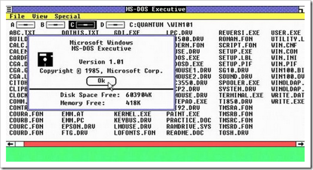Dois anos depois da estreia no mercado de sistemas operacionais, a Microsoft resolveu fazer o lançamento do Windows 2 em dezembro de 1987. A grande inovação desse software era a possibilidade de as janelas sobreporem umas às outras, funcionalidade que parece piada nos dias de hoje.
Também foi incluída a possibilidade de minimizar e maximizar as janelas; além disso, o conhecido Painel de Controle, que reunia as principais ferramentas do sistema, também fez a sua estreia no Windows 2. Outras duas ferramentas que apareceram debutaram nessa versão e permanecem até hoje, são elas o Word e o Excel — pertencentes ao Pacote Office.
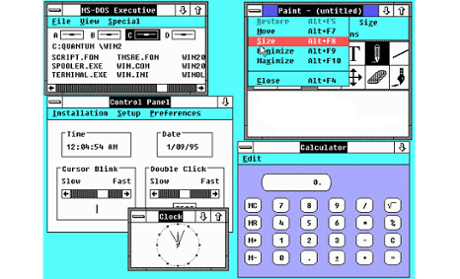Lançado em 1990, esse foi o primeiro SO da Microsoft a exigir um disco rígido para ser instalado. Também foi aquele que despertou a atenção do mercado para o nome “Windows”, colocando-o de vez na disputa pela popularidade.
A grande inovação do Windows 3 diz respeito aos programas do MS-DOS que agora podiam ser executados em uma janela normal, dando bastante flexibilidade aos que não se adaptavam logo de cara com a interface gráfica do software. O suporte a 256 cores e o jogo “Paciência” (Solitaire, em inglês) foram outras novidades importantes dessa versão do SO.
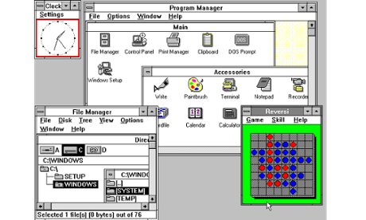Apesar de os Windows 1 e 2 também terem versões derivadas com um “ponto”, foi o Windows 3.1 que precisou ser separado do 3 por causa de suas atualizações significativas. A principal delas foi a introdução da fonte TrueType, transformando o SO, pela primeira vez, em uma plataforma de publicação.
O Windows 3.1 exigia 1 MB de memória RAM para ser executado e, depois de instalado, ocupava apenas 15 MB do disco rígido. O jogo “Campo Minado” fez a sua estreia nesta versão do sistema operacional da Microsoft.
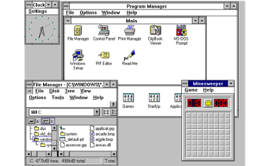Como o nome sugere, esse SO da Microsoft foi lançado no ano de 1995 e trouxe, pela primeira vez, o Menu Iniciar e a Barra de Ferramentas tão familiares para todos nós. O Windows 95 também inaugurou o conceito de “plug and play”, facilitando bastante a vida de quem precisasse utilizar um periférico diferente.
Foi nesta versão que o Internet Explorer fez a sua estreia, mas chegou apenas em um pacote adicional lançado posteriormente. A arquitetura de 32 bits também começou a aparecer nesse SO, e o MS-DOS ainda era necessário para executar uma série de funções do sistema e acessar muitos de seus recursos.
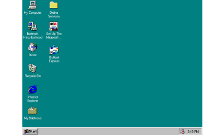Lançado em 1998, o Windows 98 foi construído sobre a versão anterior e trouxe uma série de novidades. Entre elas estão o IE 4, o Outlook Express, o Windows Address Book, o Microsoft Chat e o NetShow Play, que posteriormente seria substituído pelo Windows Media Player. Com exceção do IE, do Outlook e do WMP, todas as outras ferramentas já foram aposentadas ou substituídas.
O Windows 98 introduziu o recurso de avançar e voltar na navegação, além da barra de endereço no Windows Explorer. O suporte ao padrão USB também foi bastante aprimorado, dando início a uma adoção generalizada desse formato.
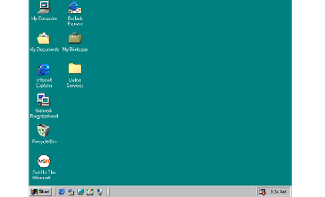O Windows Millennium Edition foi a última versão do SO baseada no MS-DOS e considerada por muitos como a pior de todas. Ela foi lançada em 2000 e teve uma variante que foi especialmente desenvolvida para equipar servidores, o Windows 2000.
O IE 5.5, o Windows Media Player 7 e o Windows Movie Maker fizeram a sua estreia no Millennium Edition. O recurso de autocompletar também fez a sua primeira aparição nesse sistema operacional, mas isso não foi suficiente para salvá-lo das críticas por causa dos bugs e problemas de instalação que apresentava.
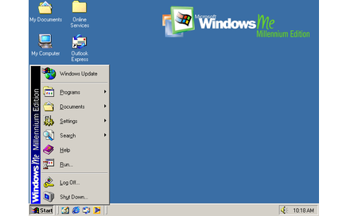Alguns argumentam que esta seja a melhor versão do sistema operacional da Microsoft. Ela foi lançada em outubro de 2001 e foi a que mais durou no mercado, recebendo suporte até o mês de abril de 2014 — 13 anos após a sua estreia no segmento.
O SO ainda se mostra relativamente popular, estando presente em mais de 20% dos computadores de todos os adeptos do SO. As principais novidades foram a repaginada no visual e a estabilidade do sistema, que agradou e conquistou milhões de usuários ao redor do mundo.
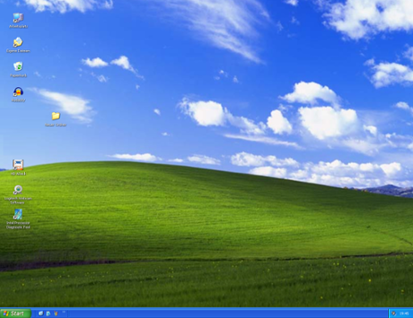Ao contrário do seu antecessor, o Windows Vista recebeu duras críticas dos consumidores que tiveram a infelicidade de utilizá-lo. O sistema apresentava uma série de problemas e funcionalidades mal-implementadas, sendo que uma das principais reclamações foi referente ao UAC ou User Account Control ("Controle de Contas do Usuário").
Apesar disso, o Windows Vista trouxe um visual moderno que apostou na transparência e recursos visuais bem-chamativos, como gadgets na Área de Trabalho. No entanto, esses também foram recursos que desfavoreceram o SO por exigirem muito do hardware da máquina, limitando a sua atuação em computadores mais potentes.
Vencendo com facilidade a liderança de sistemas operacionais mais utilizados do mercado, o Windows 7 disputa o topo do ranking na preferência de usuários com o XP. Lançado em 2009, esse SO trouxe mudanças visuais pequenas em relação ao seu antecessor, mas é mais rápido, estável e fácil de utilizar.
Mais da metade da população mundial que tem acesso a um computador utiliza o Windows 7 como sistema operacional principal em sua máquina. Isso mostra como a Microsoft acertou em cheio com essa versão de seu software.

Lançado em 2012, o Windows 8 foi a tentativa mais radical da Microsoft de alterar o visual do seu sistema operacional. A mudança foi motivada por causa da chegada dos dispositivos que respondem ao toque, eliminando, por causa disso, o menu Iniciar e dando lugar a uma tela totalmente nova que se baseia no uso de tiles (pequenos quadrados que representam um programa).
A mudança na aparência não agradou a todos, o que culminou no “fracasso” do sistema operacional. Apesar disso, o Windows 8 é ligeiramente mais rápido do que o seu antecessor e trouxe muitas novidades, como o suporte ao USB 3.0 e a Loja do Windows. Uma versão para dispositivos móveis e com suporte para processadores ARM, batizada de Windows RT, também foi lançada, mas não fez o sucesso que a companhia esperava.
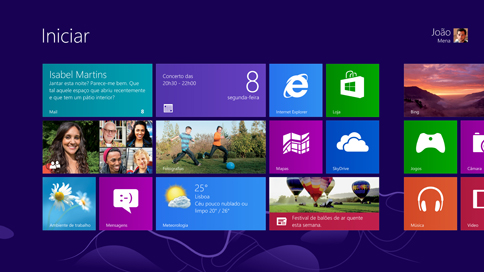Trazendo mudanças sutis em relação ao seu antecessor, o Windows 8.1 veio em resposta às reclamações das pessoas por causa das alterações visuais que o SO sofreu. Por causa disso, a Microsoft decidiu retroceder e trazer de volta o botão do menu Iniciar.
Além disso, as pessoas podiam escolher iniciar o computador diretamente a partir da Área de Trabalho, o que não era possível com o Windows 8. Não houve mudanças significativas em relação à estabilidade e à velocidade do sistema.
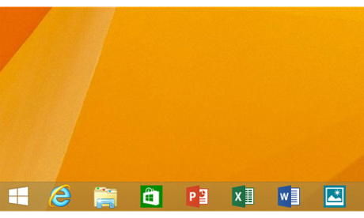O Windows 10 é a versão mais recente do sistema operacional da Microsoft e representa uma série de mudanças relevantes na forma como o SO é produzido, distribuído e mantido pela desenvolvedora norte-americana. Ao contrário de edições anteriores, o Windows 10 é vendido como um serviço: em vez de um Windows 11, por exemplo, os usuários recebem grandes atualizações, que promovem a adição de novos recursos e tecnologias de forma gratuita e horizontal, já que todo mundo passa a ter acesso a essas novidades.
Do ponto de vista da usabilidade, o Windows 10 apresenta um design revisitado e que busca acabar com as pesadas críticas que acompanharam o ciclo do Windows 8 e 8.1 e sua interface desenvolvida para telas sensíveis ao toque. Com abordagem mais convencional, o Windows 10 funciona bem em telas touch e em desktops.
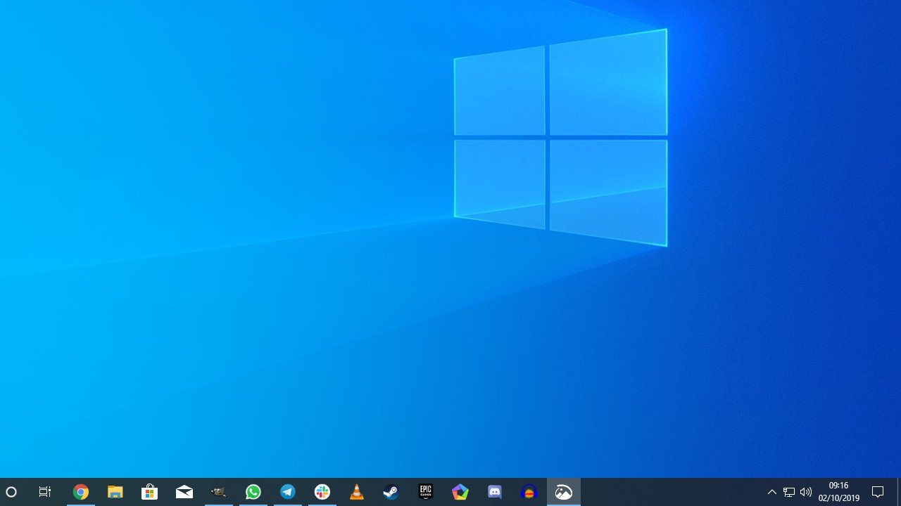